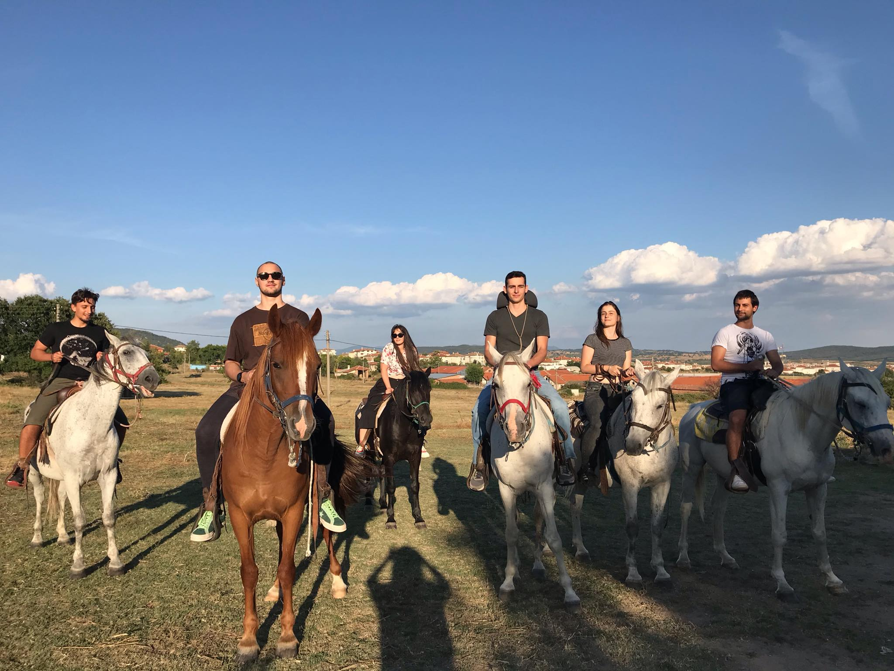

I must really like you if you’re visiting this website.
Now that you’re here check out what I’ve been up to lately. Find some simillar interests or hobbies, so we have even more fun the next time we meet. Also check out my blog Stories 😘
I must really like you if you’re visiting this website.
Now that you’re here check out what I’ve been up to lately. Find some simillar interests or hobbies, so we have even more fun the next time we meet. Also check out my blog Stories 😘
The things that move me and give an overview about my interests.
I’m riding my bicycle so much, that some friends say I hate walking (It’s a trekking bike, but I love offroad too).
Horse riding is something my mother taught me in Hisarya, and it’s been one of my favourite outdoor activities ever since. I’m honestly down to make a weekend horse trip with you. 
Recently I’m having this ‘itch’ for something aggressive, like wrestling. No hitting, just pushing and grappling
ancient spartan style.

Very new - pole dancing. I got introduced to it by my exciting friend Petya. It proves
to be challenging, but that’s the fun in it.

Not to forget boulder. Also fun and challenging, but can still be pretty easy, so a good idea for when we meet.
Wow. That was nice, right? Well, call me and let us talk.
My favourite band is Death Grips and I also like Clowncore, Stadt and I can’t stress this enough - William Maranci, but people with the same taste are … rare.
Some of the more pop artist I listen to are Run the Jewels (just discovered), Gwen Steffany, Lady Gaga, Lizzo.
My favourite movie is American beauty, but favourite genre is Sci-Fi actually.
This site, obviously, which is a work in progress, and is something I very much enjoy writing. I’m making it with HUGO, so if that name means anything to you, I’ll be excited to talk about it. Credits at the bottom.
My mother language is Python, but I also speak mediocre Haskell and little C++.
Recently I built an entire gaming computer by myself - chose all the parts from the motherboard to the case by myself and dedicated an entire Saturday to building the parts together. Besides I also make a lot of PC upgrades and repairs at work, so I’m confidently experienced in that field.
Also my dream job is sex robots AI developer, shoutout to realbotix.
Want to read my brainstormed list of freetime activities?
Check out this page I created. It carries some suggestions…

This is a work in progress, and some of the most intriguing parts are yet to come.
Let us get in touch!